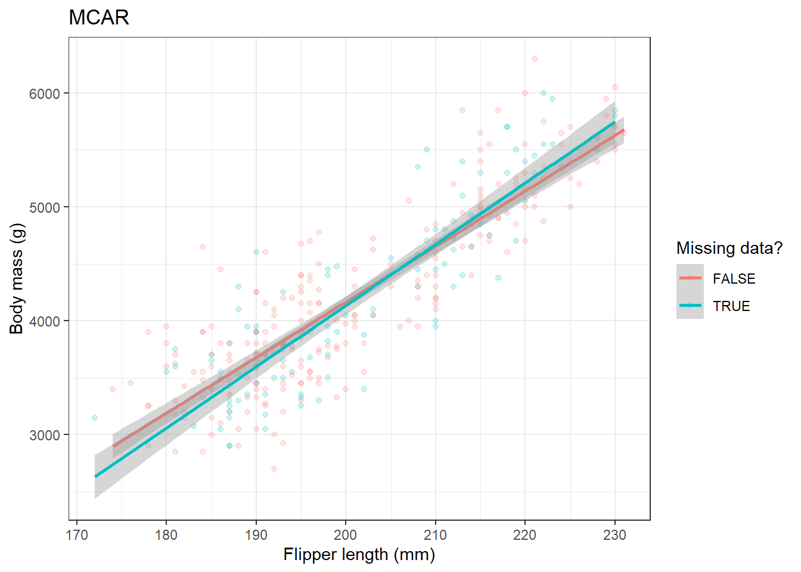
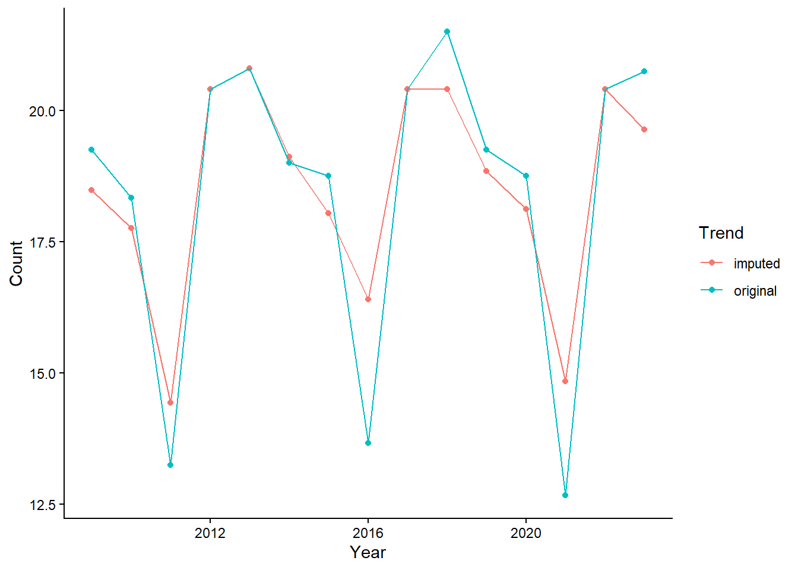

# na.omit()
df <- na.omit(df)
# complete.cases()
df <- df[complete.cases(df), ]
# rowSums()
df <- df[rowSums(is.na(df)) == 0, ]
# drop_na()
df <- df %>% tidyr::drop_na()Making missing data work for us
1 Planning monitoring with deliberate missing data
TL;DR
Missing data is a problem for the analysis of ecological data but we can use missing data theory to help fill in gaps in biodiversity monitoring data if the missingness is deliberately planned
Inspired by this paper and discussions over coffee at this year’s NINAdager (our annual work get-together) I thought I would further explore the use of planned missing data designs in ecological monitoring (I did a talk on this last year at an event on Threatened species in Norway).
1.1 Missing data
Missing data is normally a problem. Typically as ecologists we sweep missing data under the carpet by using a “complete case” approach to data analysis.

If you have ever written some code like this:
you are removing missing data (NAs) from your dataset.
1.1.1 Why is this a problem?
By throwing away potentially useful data (only including those rows without a NA in them) you reduce the information you are working with, reduce statistical power and introduce selection bias (invalidating any assumption of randomisation).
1.1.2 Different types of missingness
There are three broad categories of missing data, “Missing completely at random” (MCAR), “Missing at random” (MAR - a very confusing name!), “Missing not at random” (MNAR).
MCAR - missingness is not related to any measured or unmeasured variables
MAR - missingness is not random but related to other variables and can be accounted for by another complete variable
MNAR - missingness is related to the missing data itself (there is a systematic reason why the data are missing within a particular variable)
Imagine that we are measuring rainfall at weather stations across Norway every year. If we randomly subsample the locations that we will measure in one particular year we will have data that is MCAR (Table 1 (b)). If the first three weather stations are on top of mountains and the weather conditions were too harsh for us to take a measurement we will have data that is MAR (missingness is related to the station number Table 1 (c)). Finally, if our rainfall measuring tool has a systematic error so that the largest amounts of rainfall are not measured we would have data that is MNAR (Table 1 (d)).
Table 1: Missing data patterns
| station number | rainfall |
|---|---|
| 1 | 30 |
| 2 | 150 |
| 3 | 75 |
| 4 | 250 |
| 5 | 55 |
| station number | rainfall |
|---|---|
| 1 | 30 |
| 2 | |
| 3 | |
| 4 | 250 |
| 5 | 55 |
| station number | rainfall |
|---|---|
| 1 | |
| 2 | |
| 3 | |
| 4 | 250 |
| 5 | 55 |
| station number | rainfall |
|---|---|
| 1 | 30 |
| 2 | |
| 3 | 75 |
| 4 | |
| 5 | 55 |
Without knowledge of what values are missing it can be impossible to identify MNAR.
1.1.3 What effect does missingness have?
The code block below shows the impact of different types of missingness on the observed relationship between two variables.
library(tidyverse, quietly = TRUE)
library(missMethods, quietly = TRUE)
library(palmerpenguins)
# create datasets with levels missingness
penguins_complete<-penguins |>
drop_na()
# create a pattern of missingness
#(30% missing completely at Random)
miss_penguins_MCAR<-missMethods::delete_MCAR(penguins_complete, 0.3, "flipper_length_mm")
# create a pattern of missingness with censoring
#(missing value in flipper_length if body_mass is below 30% quantile of body_mass)
miss_penguins_MAR<-missMethods::delete_MAR_censoring(penguins_complete, 0.3, "flipper_length_mm", "body_mass_g")
# create a pattern of missingness with censoring
#(missing value in flipper_length if flipper_length is below 30% quantile)
miss_penguins_MNAR<-missMethods::delete_MNAR_censoring(penguins_complete, 0.3, "flipper_length_mm")
all_data<-bind_rows("Full"=penguins_complete, "MCAR"= miss_penguins_MCAR, "MAR"= miss_penguins_MAR, "MNAR"=miss_penguins_MNAR, .id="Missingness")
## plot the missing data function
MDplot<-function(df_comp, df_mis, title){
df_comp$missX<-is.na(df_mis$flipper_length_mm)
ggplot(data=df_comp,aes(x=flipper_length_mm,y=body_mass_g, colour=missX))+
geom_point(alpha=0.2)+
geom_smooth(method = "lm")+
labs(x="Flipper length (mm)", y="Body mass (g)")+
scale_color_discrete(name="Missing data?")+
ggtitle(title)+
theme_bw()
}
MDplot(penguins_complete, miss_penguins_MCAR, title="MCAR")
MDplot(penguins_complete, miss_penguins_MAR, title="MAR")MDplot(penguins_complete, miss_penguins_MNAR, title="MNAR")Where data are MCAR there is little impact on the estimate of the relationship between flipper length and body mass. However, MAR and MNAR can have large effects on the estimate.
1.1.4 Some solutions to missing data
With MCAR and MAR we can use multiple imputation techniques which generate simulated datasets to fill in the missing data. The imputed data are simulated by assessing the relationship between the variable with missingness and other complete variables. Typically several imputed datasets are produced and then combined to give a dataset with no missing data.
In addition, you can analyse covariance structures (in a regression framework). Using a Structured Equation Model (SEM) we can run a simple linear regression. Below is the code for running a normal linear model and a SEM model. You can see that the output is broadly equivalent.
library(lavaan)
# we will use the Iris dataset for this example
complete_model<-lm(Petal.Width ~ Sepal.Length + Sepal.Width + Petal.Length, data=iris)
iris_MCAR<-missMethods::delete_MCAR(iris, 0.3, "Petal.Width")
miss_model1<-lm(Petal.Width ~ Sepal.Length + Sepal.Width + Petal.Length, data=iris_MCAR)When we use missing data we can see the difference between the regression coefficients.
library(stargazer, quietly = TRUE)
stargazer(complete_model, miss_model1,
star.cutoffs = c(.05, .01, .001),
no.space = T, type = 'text')
=====================================================================
Dependent variable:
-------------------------------------------------
Petal.Width
(1) (2)
---------------------------------------------------------------------
Sepal.Length -0.207*** -0.228***
(0.048) (0.055)
Sepal.Width 0.223*** 0.246***
(0.049) (0.055)
Petal.Length 0.524*** 0.529***
(0.024) (0.029)
Constant -0.240 -0.208
(0.178) (0.197)
---------------------------------------------------------------------
Observations 150 105
R2 0.938 0.940
Adjusted R2 0.937 0.938
Residual Std. Error 0.192 (df = 146) 0.184 (df = 101)
F Statistic 734.389*** (df = 3; 146) 523.838*** (df = 3; 101)
=====================================================================
Note: *p<0.05; **p<0.01; ***p<0.001complete_model_lavv <- sem('Petal.Width ~ Sepal.Length + Sepal.Width + Petal.Length', data=iris)
summary(complete_model_lavv)lavaan 0.6.16 ended normally after 1 iteration
Estimator ML
Optimization method NLMINB
Number of model parameters 4
Number of observations 150
Model Test User Model:
Test statistic 0.000
Degrees of freedom 0
Parameter Estimates:
Standard errors Standard
Information Expected
Information saturated (h1) model Structured
Regressions:
Estimate Std.Err z-value P(>|z|)
Petal.Width ~
Sepal.Length -0.207 0.047 -4.422 0.000
Sepal.Width 0.223 0.048 4.615 0.000
Petal.Length 0.524 0.024 21.690 0.000
Variances:
Estimate Std.Err z-value P(>|z|)
.Petal.Width 0.036 0.004 8.660 0.000miss_model2 <- sem('Petal.Width ~ Sepal.Length + Sepal.Width + Petal.Length', data=iris_MCAR, missing="ML")
summary(miss_model2)lavaan 0.6.16 ended normally after 19 iterations
Estimator ML
Optimization method NLMINB
Number of model parameters 5
Number of observations 150
Number of missing patterns 2
Model Test User Model:
Test statistic 0.000
Degrees of freedom 0
Parameter Estimates:
Standard errors Standard
Information Observed
Observed information based on Hessian
Regressions:
Estimate Std.Err z-value P(>|z|)
Petal.Width ~
Sepal.Length -0.228 0.054 -4.212 0.000
Sepal.Width 0.246 0.054 4.547 0.000
Petal.Length 0.529 0.029 18.423 0.000
Intercepts:
Estimate Std.Err z-value P(>|z|)
.Petal.Width -0.208 0.193 -1.075 0.282
Variances:
Estimate Std.Err z-value P(>|z|)
.Petal.Width 0.032 0.004 7.246 0.000Adding the argument ‘missing = “ML”’ to the sem() function estimates a likelihood function for each row based on the variables that are present so that all the available data are used. You can see that the lm() uses only 105 observations whereas the sem() uses all 150 observations.
MNAR is difficult to do much with as we often can not identify the process that generates the missing data pattern.
2 How can we make missing data work for us?
Planned missing data designs make use of missing data theory to reduce costs in monitoring. Randomly missing sampling occasions or some repeated measures on subjects creates a dataset that is MCAR. We can then use modelling or imputation techniques to fill the gaps and analyse trends in our data.
Let’s assume we are monitoring birds at 5 locations over a number of years to assess regional trends but our budget is cut and we can only afford to visit 80% of the locations in any given year.
We can set up a simulation to look at the effects of imputing data.
# Load mice
library(mice, quietly = TRUE)
# Set seed for reproducibility
set.seed(123)
# Simulate data: location, year, count
locations <- rep(1:5, each = 5) # Assuming 5 locations
years <- rep(2009:2023, 5) # Assuming data for 5 years
count <- round(rpois(25, lambda = 20)) # Simulated count data
# Create a dataframe
data <- data.frame(Location = locations, Year = years, Count = count)
# Introduce missingness - Missing completely at random (MCAR)
prop_missing <- 0.2 # Example: 20% missingness
missing_indices <- sample(1:nrow(data), prop_missing * nrow(data))
data$Count[missing_indices] <- NA
# Check the structure of the data
str(data)'data.frame': 75 obs. of 3 variables:
$ Location: int 1 1 1 1 1 2 2 2 2 2 ...
$ Year : int 2009 2010 2011 2012 2013 2014 2015 2016 2017 2018 ...
$ Count : num 17 25 12 20 27 NA 14 NA 25 21 ...When we impute the missing data we use 5 replicates and then take the mean of all 5 datasets per year.
# Impute missing data using MICE
imp <- mice(data, m = 5, method = 'pmm', seed = 500)
iter imp variable
1 1 Count
1 2 Count
1 3 Count
1 4 Count
1 5 Count
2 1 Count
2 2 Count
2 3 Count
2 4 Count
2 5 Count
3 1 Count
3 2 Count
3 3 Count
3 4 Count
3 5 Count
4 1 Count
4 2 Count
4 3 Count
4 4 Count
4 5 Count
5 1 Count
5 2 Count
5 3 Count
5 4 Count
5 5 Count# Analyse trends and variation in the original and imputed data
# For illustration purposes, assuming a simple trend analysis
original_trend <- aggregate(data$Count, by = list(data$Year), FUN = mean, na.rm = TRUE)
names(original_trend)<-c("Year","Count")
imputed_trend <- complete(imp, 'long')
imputed_trend <- aggregate(Count ~ Year, data = imputed_trend, FUN = mean)
# Visualization of trends in original and imputed data
plot_data<-bind_rows("original"=original_trend, "imputed"=imputed_trend, .id="Trend")
plot_data |>
ggplot(aes(Year, Count, colour=Trend))+
geom_point()+
geom_line()+
theme_classic()
The plot shows the data with imputed values (red points and line) versus the original data (blue).
2.1 Caveats
Although imputing data is a viable approach to resource constraints it is undoubtedly better to have real data at every step. In addition, it is important that other forms of missing data patterns are not introduced in to the data by accident.